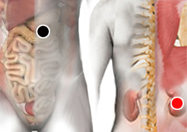

Arsenicosis
Par
punta de pancreas - riñón

Generalidades:
Intoxicación por arsénico El arsénico es un semimetal que se encuentra en la naturaleza en varias formas, ya sea como compuesto orgánico o inorgánico (más tóxico) , su toxicidad también depende de la valencia que puede ser trivalente (arsenito) o pentavalente (arseniato) o arsénico elemental.
Síntomas:
Los síntomas inmediatos de intoxicación aguda por arsénico incluyen síntomas gastrointestinales: vómitos, dolor abdominal y diarrea. Seguidamente, aparecen otros efectos, como entumecimiento u hormigueo en las manos y los pies o calambres musculares y, en casos extremos, la muerte.
Trasmisión:
El arsénico se ingiere principalmente a través del agua contaminada o alimentos como pescados, mariscos, cereales, arroz, setas, carne de pollo, en menor se encuentra en el aire. El contcacto a través de la piel tiene pocos efectos nocivos.
La infección por este virus es más común a final del invierno y en primavera. Afecta vías respiratorias altas con síntomas parecidos al resfriado común; estornudo, inflamación de garganta, conjuntivitis... pero también puede afectar otros órganos como aparato digestivo y vejiga. En niños es más común y deben permanecer en reposo para evitar complicaciones e infectar a otros niños.
Transmisión
De persona a persona, ya sea por contacto directo, presente en las manos, rostro, etc.; o en secreciones por vía aerea al estornudar o hablar.